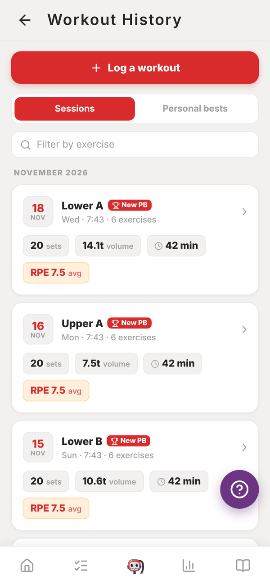
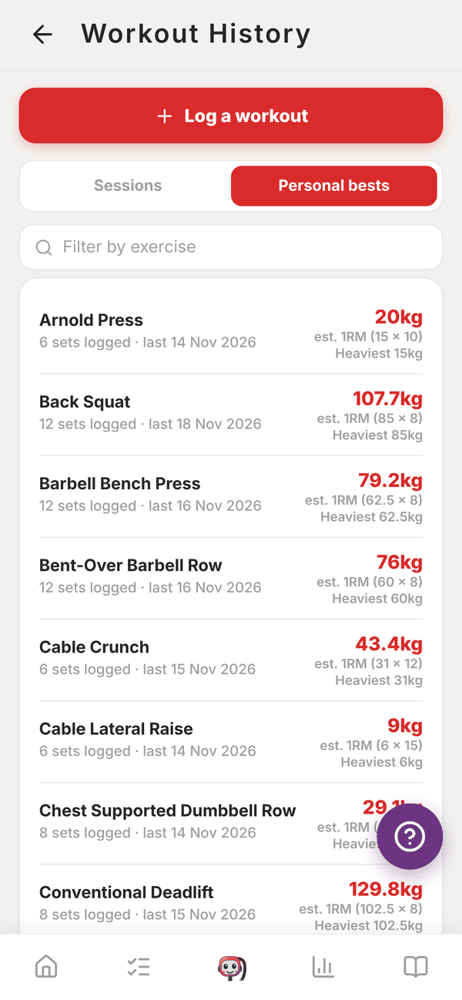
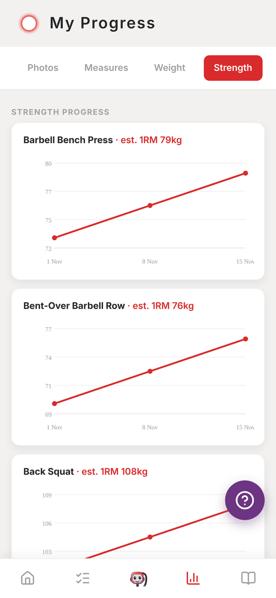
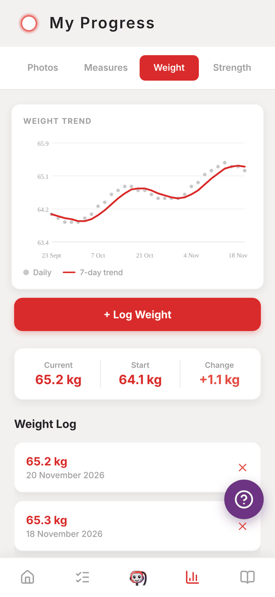
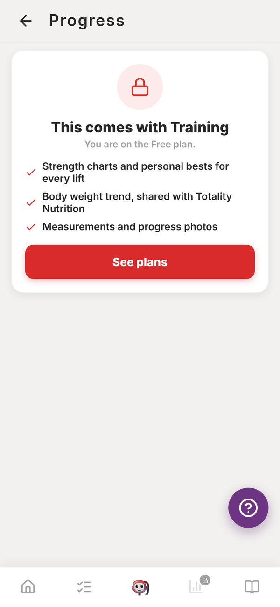

Totality Training guide
Progress and history
Every workout you logged, your personal bests, strength charts and body stats.
Workout history#


Open Workout history from Quick access on Home. It is free on every plan Free.
- Sessions lists every workout by date, with sets, volume, time, average RPE and any new personal best. Tap one to see every set.
- Personal bests lists each exercise with your best estimated one rep max, the set it came from and your heaviest weight.
- Filter by exercise to find one lift.
- Log a workout adds a workout you did without the app.
Progress#


Training The chart button on the bar opens Progress, with four tabs:
- Photos. Add front, side and back photos to compare over time.
- Measures. Body measurements.
- Weight. Your daily weight and a 7 day trend. Tap Log Weight. Your weight is shared with Totality Nutrition.
- Strength. A chart of the estimated one rep max for each lift.
On Free, Progress shows what it includes and a See plans button.

Questions#
How is the one rep max worked out?
It is an estimate from your best set, for example 85 kg for 8 reps. It is a guide, not a test.
I log my weight in Totality Nutrition. Do I need to log it here too?
No. It is the same weight log in both apps.